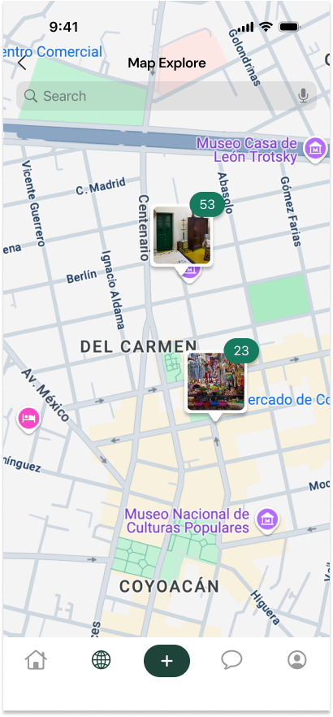
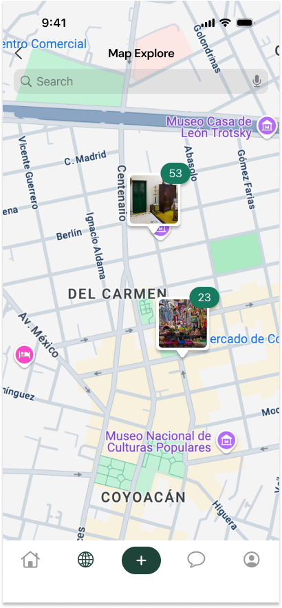
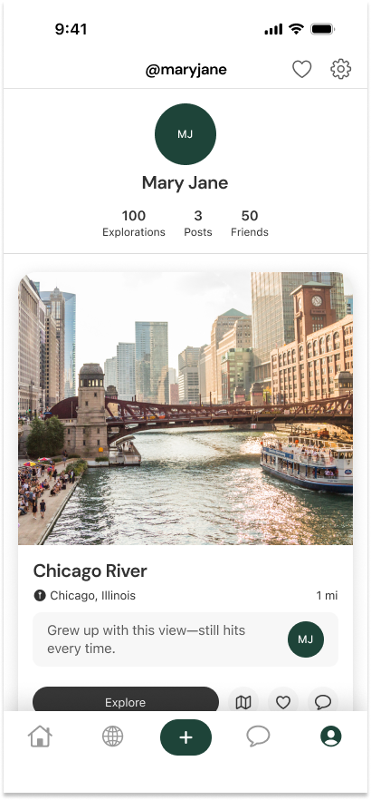
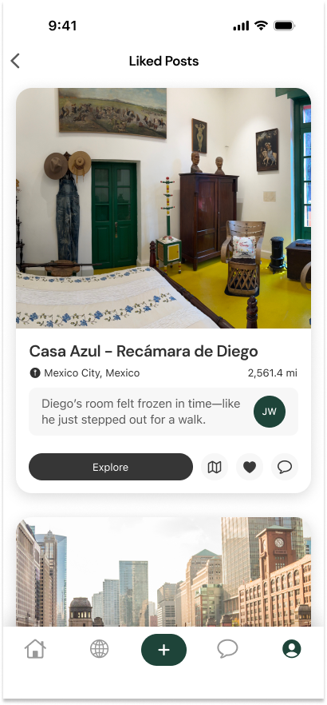
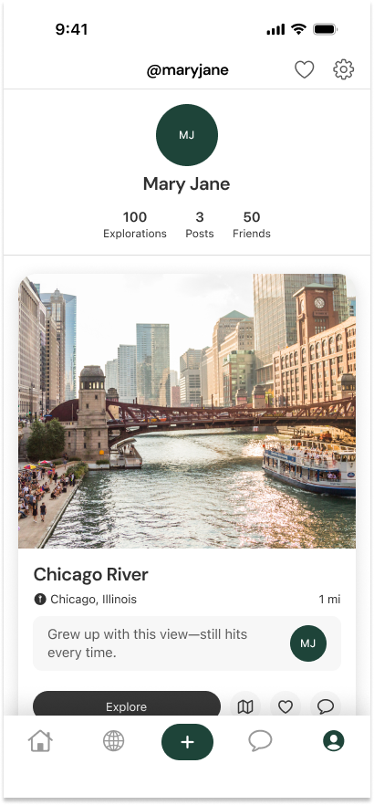
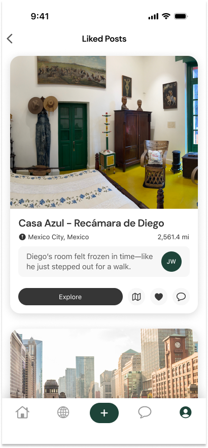

ARound
Role
Founder & Lead Product Designer
Timeline
4 weeks
Mar-April 2025
Skills + Tools
UI/UX Design, Figma, Prototyping, Brand Design, User Research (Linescale)
How might we make cultural exploration more accessible to those unable to travel—without compromising on depth, authenticity, or personal connection?
The Challenge
Global travel is out of reach for many people due to health, financial, and political barriers. Yet the desire to explore culture, reconnect with loved ones, and experience the world remains strong. ARound is an AR-powered platform designed to bridge this gap—helping users explore global landmarks, everyday spaces, and cultural stories through immersive, AI-enhanced posts. By combining visual machine learning, educational overlays, and user-generated content, ARound offers a virtual alternative to travel rooted in curiosity and connection.

Research & Insights
Our Linescale concept testing involved 14 participants who rated ARound on feasibility, value, and profitability. The platform received an acceptor score of 50%, which ranks as a “very highly rated” concept and validated our direction for early-stage product development. Competitor analysis against platforms like Airbnb Experiences, Google Arts & Culture, and Bloomberg Philanthropies helped us identify white space in making cultural immersion personal, mobile, and participatory.
“I prefer real-life experiences over virtual ones.”
“I feel like augmented reality just can't capture the true essence of a culture.”
Design Strategy
ARound’s MVP design includes a personalized feed of AR posts, a global Explore Hub with map search and category filters, and post creation tools for scanning and uploading new content. Users can interact with posts, chat, and save their favorite discoveries. By shifting to user-generated content, we responded to early concerns about AR’s ability to “capture the true essence of a culture”—letting real people contribute real stories, rather than relying on a static institutional voice.
 


 



Results & What’s Next
Currently, ARound is in the prototyping and early testing phase. Our next focus is on refining the AR post-creation flow, improving AI-generated overlays, and conducting hands-on user testing with mobile AR in Swift. Long term, ARound aims to be a more inclusive platform for cultural discovery—removing the cost and access barriers tied to travel while helping users feel more connected to the world around them.